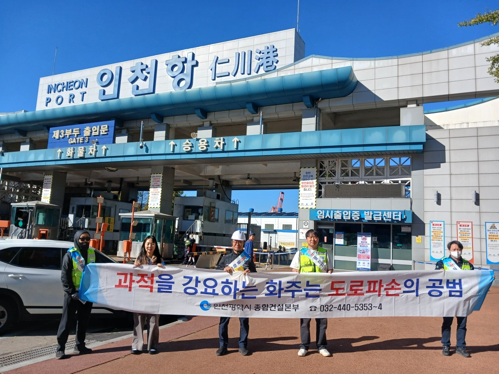
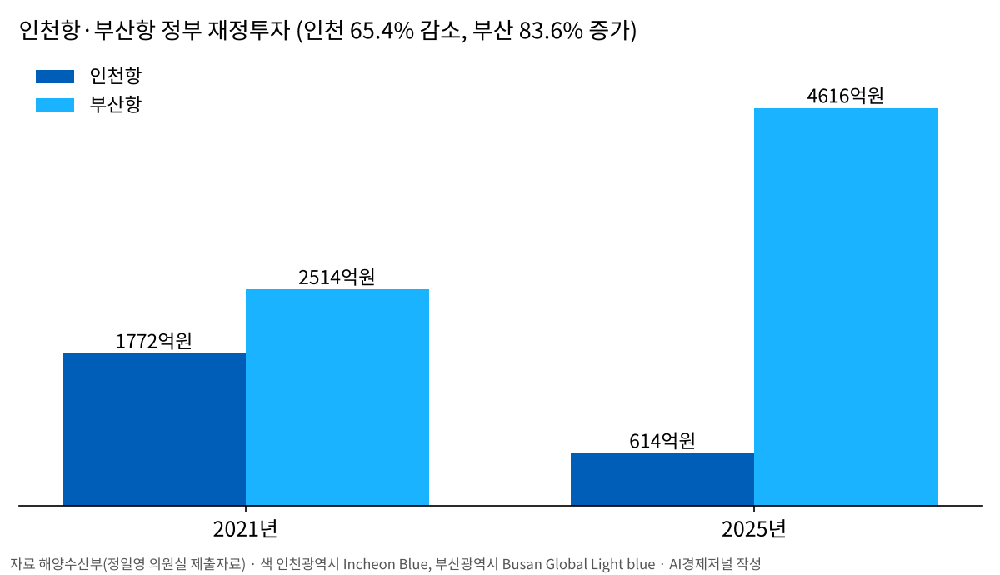

항만공사 통합 용역 16일 마감…'통합해야 하나' 묻는 과제 없어
해수부 4억원 연구, 과업 12개는 통합 설계·법 개정 중심
정일영 의원·노조 필요성 검증 요구, 경실련은 근거 공개 질의
인천항 재정투자 4년 새 65.4% 감소
AI경제저널=김갑봉 기자 | 해양수산부가 발주한 4억원짜리 항만공사 통합 연구용역이 16일 오전 10시 입찰을 마감한다. 과업지시서에 적힌 과업은 열두 가지다.
통합조직 설계와 지사 전환, 법률 개정안이 들어 있지만, 통합이 꼭 필요한지 원점에서 따지는 과업은 명시돼 있지 않다.
이 빈자리를 두고 정일영 더불어민주당 의원(인천 연수을)이 15일 통합 추진 중단을 요구했다. 사흘 전에는 4개 항만공사 노동조합이 용역 즉각 중단을 요구했다.

정부 "기능 같은 4개 공사 하나로"
관계부처는 9월 3일 공공기관 기능개혁 추진방안을 발표했다. 발표문은 "기능은 같으나 지역별로 산재한 4개 항만공사는 하나로 통합해 국제 항만 경쟁력을 높인다"고 적었다.
부산·인천·울산·여수광양 항만공사가 대상이다. 공사 자회사 다섯도 따로 수평 통합한다.
해양수산부는 두 달 뒤인 11월 5일 「항만공사 통합 로드맵 수립 및 법·제도 정비 방안 연구」를 긴급 공고했다. 기간은 계약일부터 여덟 달이다.
과업지시서는 정부 발표가 기본 방향만 정한 것이라고 밝혔다. 전담조직을 꾸려 관련 연구와 자문, 의견수렴을 거쳐 2027년 초까지 통합 추진방안을 발표할 예정이라고도 적었다.
계약일이 11월 하순이면 여덟 달짜리 이 연구의 종료는 2027년 7월께다.
추진방안 발표 예정 시점이 연구 종료보다 앞선다.
용역비는 해양수산부와 4개 공사가 나눠 낸다. 해양수산부 몫은 50만원이다. 인천항만공사와 부산항만공사가 1억1985만원씩, 울산·여수광양항만공사가 7990만원씩 낸다.
과업 12개, 무엇이 있고 무엇이 없나
과업 열두 가지는 현황 진단에서 시작한다. 통합의 정의와 유형 비교, 통합조직과 기존 공사 전환, 조직·사업·시스템 전환, 재무·자산 승계, 근로조건 통합이 뒤를 잇는다.
경제적 효과 분석, 법·제도 정비, 이해관계자 의견수렴을 거쳐 로드맵이 끝이다. 통합 수준별 시나리오를 짜고 최적 방안을 고르는 과업도 있다. 경제적 효과는 대안별로 따지지만, 지금 체제를 그대로 두는 안을 대안에 넣을지는 과업지시서가 정하지 않았다.
정 의원은 통합이 지금의 독립 운영보다 효율적인지 원점에서 검증하는 과제가 명시돼 있지 않다고 지적했다. 그는 "제대로 된 검증 없이 통합을 결정하고 이제 와서 실행방안을 연구하겠다는 것은 정책 추진의 순서가 잘못된 것"이라고 말했다.
인천·부산·울산·여수광양항만공사 노동조합도 12일 공동성명에서 같은 대목을 짚었다. 노조는 발전공기업 5개사 통합은 6개월 동안 통합의 당위성을 먼저 검토하는데, 항만공사는 그 단계 없이 8개월 용역 하나로 간다고 비교했다.
2011년에도 오간 통합 논의
통합 논의는 처음이 아니다. 국회예산정책처가 2011년 9월 낸 「항만공사 운영의 문제점과 개선과제」를 보면 감사원은 2010년 1월 항만공사 통합 방안을 강구하라고 통보했다. 보고서는 국내 실정에 맞는 단일화된 항만운영체계 도입도 검토할 필요가 있다고 적었다.
경제정의실천시민연합과 인천·부산경실련은 10월 27일 재정경제부에 공개질의서를 보냈다. 경실련은 당시 보도를 들어 2011년 국토해양부 용역 「항만공사 운영 개선대책 마련을 위한 연구」를 소개했다. 이 연구가 단순 통합의 시너지가 미미하다며 협력네트워크를 대안으로 냈다는 설명이다. 경실련은 공공기관운영위원회 의결 자료와 회의록 공개, 2011년 연구를 검토했는지 여부 등 네 가지를 묻고 13일까지 회신을 요청했다.
경실련이 정리한 2025년 영업이익은 부산 1417억원, 울산 318억원, 인천 178억원이다. 여수광양은 6억원가량 영업손실을 냈다.
수익 규모가 공사마다 크게 다르다.

인천의 셈법, 줄어든 투자와 결정권
해양수산부가 정 의원에게 낸 자료를 보면 인천항 정부 재정투자는 2021년 1772억원에서 2025년 614억원으로 65.4% 줄었다. 같은 기간 부산항은 2514억원에서 4616억원으로 83.6% 늘었다.
정 의원은 "항만공사마저 하나로 통합한다면 인천항의 투자 우선순위가 더욱 밀려날 수 있다"고 말했다.
박찬대 인천시장도 10월 7일 취임 100일 기자회견에서 인천항 결정 권한을 줄이거나 투자를 뒤로 미루는 통합에는 동의하기 어렵다고 했다.
인천시는 인천연구원에 단기 연구를 맡겨 통합 대응에서 시의 역할과 실익을 살피고 있다. 연말 완성이 목표다.
해외 연구, 통합 효과는 조건 따라
해외 실증 연구는 통합 효과가 조건에 따라 갈린다고 본다. 저우위타오(Zhou Yutao) 등은 2023년 『교통지리학 저널』에 중국 연안 9개 성의 2004~2019년 자료를 다기간 이중차분법으로 분석했다.
성 단위 항만 통합은 항만 효율을 높였지만 환경을 반영한 효율에는 뚜렷한 효과가 없었다.
효율 개선은 성의 규모가 작고 항만 전문화 수준이 낮은 곳, 항만 규모가 큰 곳, 2015년 이후 통합한 곳에서 더 컸다. 행정의 개입은 적정 수준일 때 효과를 키웠다.
참고문헌
- 정일영 국회의원실, 「정일영 국회의원 "통합부터 결정하고 뒤늦게 용역? 항만공사 졸속 통합 즉각 중단해야"」 보도자료, 2026년 11월 15일
- 해양수산부, 「용역 입찰 공고(긴급) — 항만공사 통합 로드맵 수립 및 법 제도 정비 방안 연구」, 해양수산부 공고 제2026-1450호, 2026년 11월 5일
- 해양수산부·부산·인천·여수광양·울산항만공사, 「항만공사 통합 로드맵 수립 및 법·제도 정비 방안 연구 과업지시서」, 2026년 10월
- 관계부처 합동(재정경제부 공공정책총괄과), 「공공기관 기능개혁 추진방안」, 2026년 9월 3일(정책브리핑 게재), https://www.korea.kr/news/policyNewsView.do?newsId=148971154
- 경제정의실천시민연합·부산경실련·인천경실련, 「경실련, 항만공사 통합에 대하여 재경부 공개질의서 발송」 보도자료, 2026년 10월 27일, https://ccej.or.kr/posts/3wtXxEG
- 국회예산정책처, 『항만공사 운영의 문제점과 개선과제: 부산·인천 항만공사를 중심으로』, 사업평가 현안분석 제31호, 2011년 9월
- Zhou, Y.·Li, Z.·Duan, W.·Deng, Z., 「The impact of provincial port integration on port efficiency: Empirical evidence from China's Coastal Provinces」, 『Journal of Transport Geography』 108, 2023년, 103574, https://doi.org/10.1016/j.jtrangeo.2023.103574
- 해양수산부, 인천항·부산항 정부 재정투자 현황(2021~2025), 정일영 의원실 제출자료(의원실 보도자료 재인용), 2026년
[사진 출처]
- [사진 1] 인천광역시 종합건설본부, 「인천시, 항만 일대 과적 화물차 합동단속… 도로 파손 예방」 보도자료 현장사진, 2026년 10월 28일, 공공누리 제1유형(출처표시), https://www.incheon.go.kr/IC010205/view?repSeq=DOM_0000000015850971
※ 이 기사는 AI 프로그램 클로드를 활용해 작성했습니다.
관련기사
저작권자 © AI경제저널 무단전재 및 재배포, AI학습 및 활용 금지